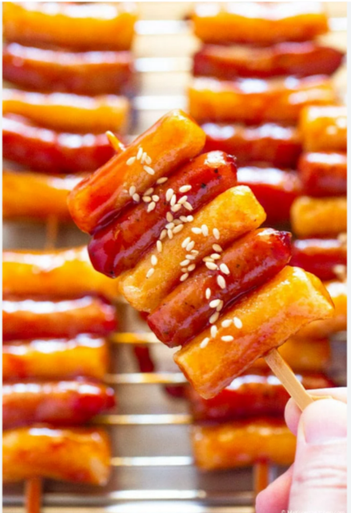

Sotteok

Description
Sotteok is a savory and sweet Korean street food. It is a skewer with rice cakes and sausage coated in a spicy, sweet sauce that is grilled
Ingredients
- Rice cakes
- Vienna sausage
- Sugar
- Water
- Ketchup
- Soy sauce
- Gochujang
- Cooking oil
Steps
- Blanch the rice cakes in boiling water to soften them and then drain
- Combine sugar, water, ketchup, soy sauce, and gochujang in a saucepan over heat until the sugar dissolves and sauce thickens
- Thread the rice cake and sausage onto the skewer
- Heat oil until boiling and then gently place skewers into the oil
- Fry skewer about 1 min each side
- Spread the sauce onto the cooked skewers